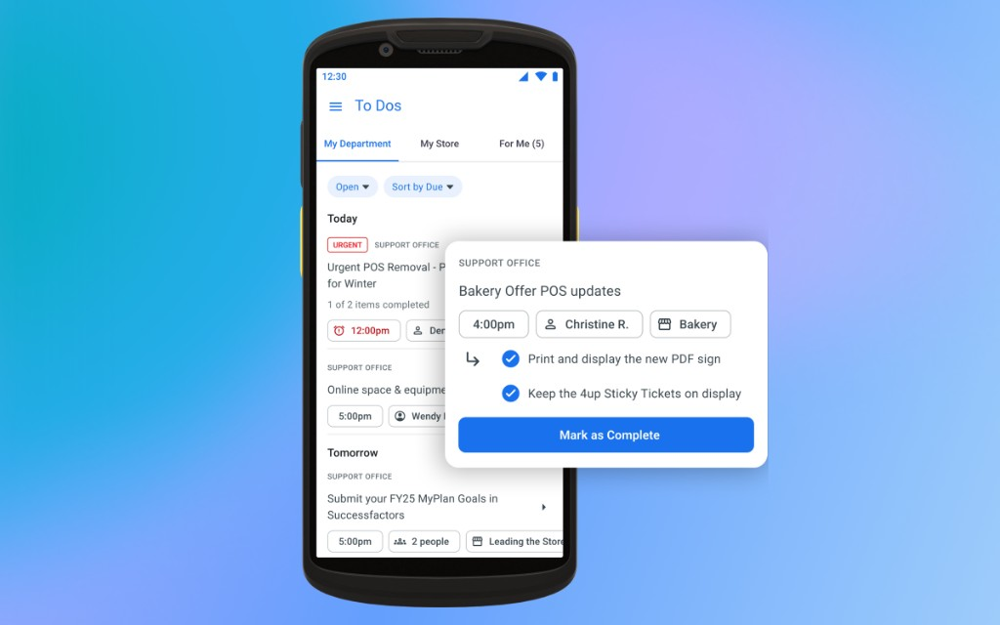
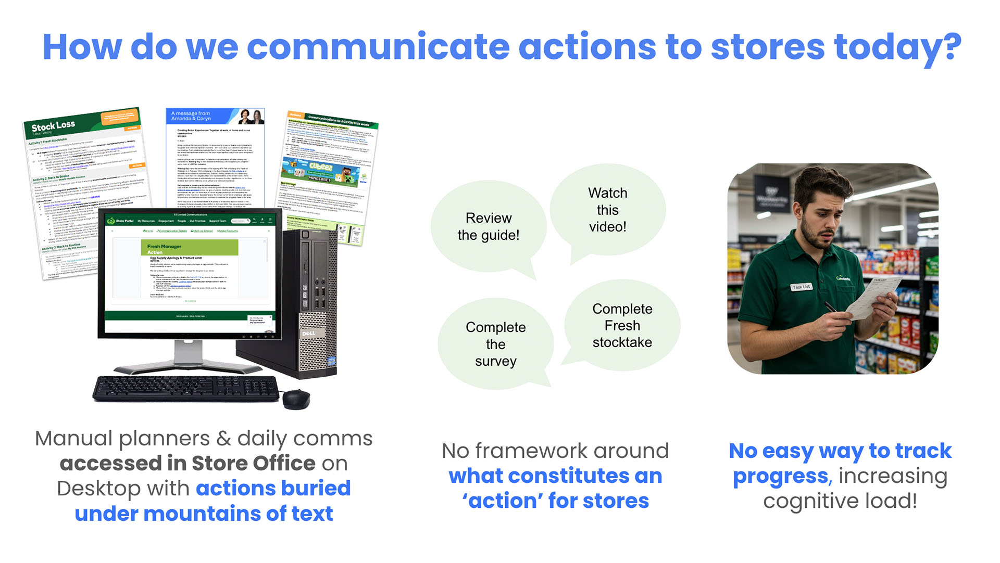

Me@Woolies: To Dos

Challenge
Store teams at Woolworths had no consistent way to manage daily tasks. Actions were buried in long communications, only accessible on desktop in the store office. There was no framework distinguishing informational content from actionable tasks, no way to track completion, and no accountability on who owned what.

Solution
We designed a mobile-first To Dos feature for RF devices, built around a triage screen. Tasks appear like a shared inbox for the Store Leader and Store Manager, giving visibility of what’s new before it’s added to a team’s To Do list. From there, a leader could schedule a task, acknowledge it to action later, or give it to another team member.
My Design & Approach
Tobias and I partnered with product, operations, and store teams to define what a “task” should even mean in this context, and I designed the triage experience through iterative rounds with partner stores.
I mapped the flows end to end across the feature. Each one had to work for three roles with different permissions — a Store Manager seeing across the store, a Store Leader across their department, a Team Member seeing only what’s landed on them — and hold up whether the task came from Support Office or was raised in store, and whether it was due today, due later, or already overdue. That meant working through the branches nobody demos as well as the happy paths: what happens when a task has no owner, what a leader sees actioning a set at once, what’s left on screen when everything’s done.
Much of the difficulty was in rules rather than screens: how a list groups by due date, where overdue sits relative to today, what an urgent tag does and doesn’t change about sort order. I wrote those as options with the reasoning beside them so the team could decide with the trade-offs visible.
Design Challenges
Design Challenge 1: Personal vs. Cascaded Actions
We’d initially designed the platform around personal, self-managed actions, but executive concerns about store culture pushed us to pivot toward actions cascaded from the Support Office instead. We trialled the personal version in partner stores first; teams found it clunky with no way to delegate, which confirmed the pivot was right.
Design Challenge 2: The "Acknowledge" Button
Once cascaded To Dos launched, we hit a real usability problem: the "Acknowledge" button. Teams didn’t understand what it did or why it was a separate step, especially for simple tasks they could’ve just completed on the spot. We’d validated that To Dos as a concept made sense, but hadn’t validated the language or interaction model with a wider group.
My lead and I ran listening sessions together to understand the confusion, and found team members were thinking in terms of what they needed to do, not what they needed to signal. We iterated in stages: renaming the button to "Add to Department List" as a quick fix, then realising teams needed to mark simple tasks complete right from triage rather than double-handling them. We added a "Mark as Complete" option, deprioritised the reschedule action to make room for it, and finally renamed "Acknowledge" to "Do Later" once we understood its real purpose was expressing intent, not filing something away.
The end result was three clear actions that matched how teams actually thought about tasks: Do Later, Give To, and Mark as Complete.
Core Flows
A few of the core flows, out of the full set.
Triage what’s new
See tasks arriving from Support Office before they reach the team’s list.
Schedule it for the right time
Set a date and time so a task lands when the shift can actually do it.
Give it to someone
Assign to one person, several people, or yourself.
Close it out
Mark a task complete, with an optional note on how it went.
Change the owner
Hand a task to a team member or another leader.
Result
To Dos piloted in test and learn partner stores before rolling out across more than 1,000 stores and fulfilment centres in Australia. The later rounds of piloting showed a marked improvement in comprehension and adoption over the earlier "Acknowledge" version, and the redesigned language reduced the double-handling teams were experiencing with simple tasks.
What I Learnt
Validating a concept isn’t the same as validating the language around it. We’d co-designed To Dos with teams from day one and still missed how confusing "Acknowledge" felt to someone just trying to get through a shift. What actually fixed it wasn’t a redesign, it was renaming a button three times until the words matched how people already talked about their own work.